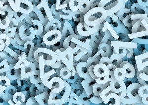

Para efeitos da nota atribuida à resolução de exercícios ao longo do semestre - Submeter até 23:59 de 27 de Março
(o problema continuará depois disponível para submissão, mas sem contar para a nota)
[para perceber o contexto do problema deve ler o guião da aula #01]
 O Pedro reparou que por baixo do seu portátil estava escrito o número 95726184. Curioso como é, não conseguiu deixar de reparar que a soma dos seus dígitos era 42! De facto, 9+5+7+2+6+1+8+4=42, o que fez o Pedro pensar que esta era um número mesmo "arranjadinho".
Felicíssimo, foi a correr ter com o Manuel contar a sua descoberta. No entanto, o Manuel não acho a descoberta assim tão fascinante, pois achou que existiam mesmo muitos números com essa propriedade. O Pedro começou a contar a partir do 95726184 e de facto 9 números depois vem o 95726193, cuja soma dos dígitos também é 42. Mas nem sempre a distância é tão curta...
Depois de pensarem mais um pouco, o Pedro e o Manuel acharam que podiam daqui criar um jogo para desafiarem o Eduardo, o Hélder e o Alberto, que consiste em encontrar o primeiro número "arranjadinho" maior que um dado número. Para impedir que simplesmente eles tentem decorar respostas, eles decidiram que estavam interessados em números cuja soma dos dos dígitos fosse um número também à escolha e não apenas 42.
Dados vários pares de inteiros Ni e Ki, a tua tarefa é descobrir, para cada par, qual o menor número maior que Ni tal que a soma dos seus dígitos seja exactamente Ki.
Na primeira linha do input vem um inteiro T indicando o número de casos de teste, ou seja, o número de pares de inteiros a considerar.
Seguem-se T linhas, cada uma com os dois inteiros Ni Ki correspondentes.
O output deve conter T linhas. A i-ésima linha deve conter um único inteiro Ri indicando a resposta para o par correspondente, ou seja, qual o número mais pequeno que é simultaneamente maior que Ni e com a soma dos seus dígitos a ser Ki.
São garantidos os seguintes limites em todos os casos de teste que irão ser colocados ao programa:
| 1 ≤ T ≤ 1 000 | Casos de teste | |
| 1 ≤ Ni ≤ 1016 | Número inicial | |
| 1 ≤ Ki ≤ 100 | Soma dos dígitos desejada | |
| 1 ≤ Ri - Ni ≤ 1018 | Diferença entre número inicial e o número a procurar |
7 100000599988 50 100000599989 50 100000599998 50 987654321098 100 12121678909876 42 12121128909876 42 1 92
100000599989 100000599998 100000679999 987679999999 12121678910004 12121128910059 29999999999
Desenho e Análise de Algoritmos (CC2001)
DCC/FCUP - Faculdade de Ciências da Universidade do Porto